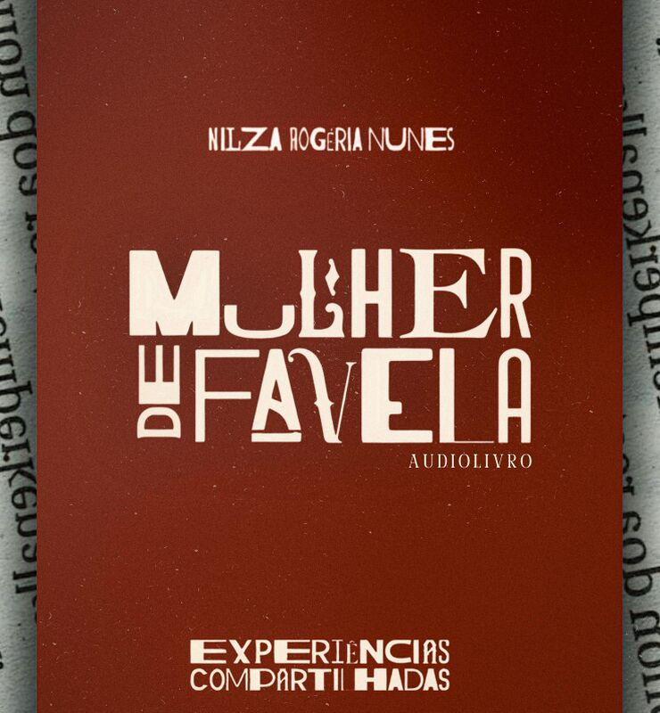
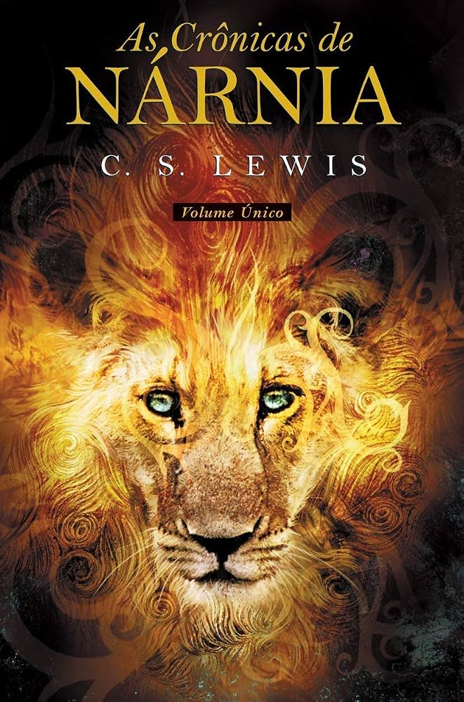

Entre telas, sons e estratégias:
meu jeito de dar vida às ideias.
Estudante de Estudos de Mídia na PUC-Rio, unindo a publicidade, design, audiovisual e tecnologia para construir narrativas que conectam de verdade.
Sobre mim

Sou Igor Martins, estudante de Estudos de Mídia na PUC-Rio, com ênfases em Publicidade e Comunicação Corporativa & Comunicação e Tecnologia, unindo a publicidade, o design, o audiovisual e a tecnologia para construir narrativas que conectam de verdade, usando a criatividade para transformar conceitos e ideias em projetos práticos e de alto impacto.
Rio de Janeiro, Brasil
Direção de Arte & Branding • Estratégia de Conteúdo • UX/UI & Web Design • Produção Audiovisual & Sound Design • Inovação Digital & P&D
Português • Inglês • Espanhol
Projetos Selecionados:
 Publicidade
Publicidade
Manô | Identidade Visual & Branding
Criação de identidade visual para loja de alimentação com o conceito “Ingredientes orgânicos, para comer com as mãos”. Desenvolvido a partir de desenhos manuais vetorizados no Adobe Illustrator, sob orientação do professor Diogo Maduell.
 Tech & UX
Tech & UX
PUCmon | Jogo em Realidade Aumentada
Conceito de jogo em AR centrado na captura dinâmica de criaturas por arremesso de pedras e evolução estilo Tamagotchi baseada em afinidade.
 Publicidade
Publicidade
Rio Gastronomia - Sabores que contam histórias
Desenvolvimento de um projeto de ativação estratégica para uma parceria entre a PUC-Rio e Rio Gastronomia, realizado na disciplina de Mídias Exper e Entretenimento, ministrada pelo professor Marcos Barbato.
O projeto explorou as sinergias entre literatura e entretenimento no contexto de um grande festival gastronômico, proponando ações de ativação de marca (com a Editora ALT, da Globo Livros), experiências imersivas e narrativas voltadas para o engajamento e a atração da Geração Z.
 Tech & UX
Tech & UX
Ignição - Petrobras
O Ignição é um Programa de Inovação Tecnológica promovido pela PUC-Rio que tem por objetivo fomentar a experimentação, desafiando jovens a co-criarem soluções para a transformação digital do setor de óleo e gás.
- Inteligência Artificial (IA)
- Web 3.0 & Blockchain
- Internet das Coisas (IoT)
- Desenvolvimento de soluções digitais
- Web Design e Experiência do Usuário (UX)
- Estruturação de interfaces e prototipagem
- Metodologias Ágeis

AudiovisualMulher de Favela (Audiolivro)
Mulher de Favela é um projeto que registra em audiolivro as histórias de 30 lideranças mulheres de favelas e periferias do estado do Rio de Janeiro. Produzido pela PUC-Rio, as entrevistas destacam o protagonismo, a resistência e o saber local dessas mulheres, promovendo a memória oral como ferramenta de transformação social. Atuei em equipe técnica de captação de áudio, utilizando o Reaper.

AudiovisualHistórias em Áudio | Nárnia (Cap. 1)
Narração e pós-produção do primeiro capítulo do clássico de C.S. Lewis. Um projeto imersivo de design de som e interpretação vocal desenvolvido para a disciplina de Experimentação em Mídias Sonoras, sob a orientação do professor Creso Soares.
Currículo & Habilidades
Experiência Profissional
Estágio | Programa Ignição Petrobras
Mar 2026 – AtualInstituto ECOA PUC-Rio
- Desenvolvo soluções em projetos de P&D em times multidisciplinares no contexto de inovação tecnológica.
- Atuo na frente de design, com foco em web design e experiência do usuário (UX).
- Estruturo interfaces e contribuo para a construção de soluções digitais.
- Colaboro com as frentes de programação e organização no desenvolvimento dos projetos.
Estagiário Técnico
Fev 2025 – Fev 2026PUC-Rio LABCOM (Estúdios de Áudio e TV)
- Produzi e editei conteúdos audiovisuais para disciplinas e projetos acadêmicos, da gravação à pós-produção.
- Realizei captação e tratamento de áudio em estúdio, com ajuste de níveis, cortes, sonoras e trilhas.
- Operei equipamentos de estúdio de TV, incluindo câmeras, teleprompter e switcher.
- Prestei suporte técnico a alunos durante gravações.
Formação
Bacharelado em Estudos de Mídia
2024 – 2028PUC-Rio
Ênfase em Publicidade e Comunicação Corporativa & Comunicação e Tecnologia.
Habilidades & Ferramentas
Idiomas
- Português
- Inglês
- Espanhol
Tem um projeto interessante?
Vamos conversar.
© 2026 Igor Martins
Voltar ao topo ↑